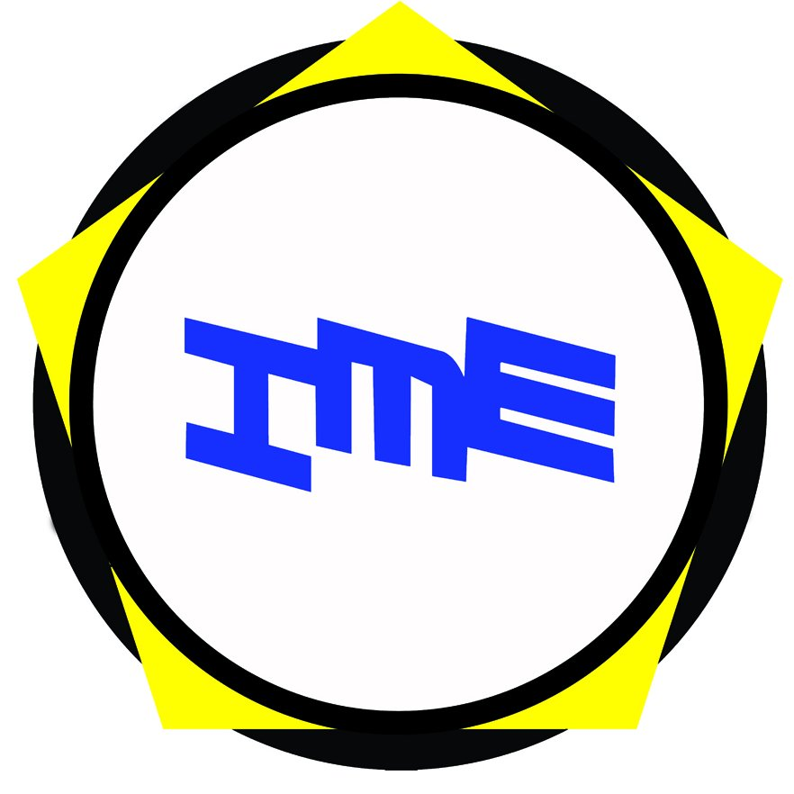

Internal Products: How to Measure Success
How to think about value and adoption for tools used inside organizations.
Read on Medium →I lead product, project and transformation work across business, data and technology—from shaping the initiative to building the team and delivering at scale.
Hands-on leadership across global data products, enterprise analytics and transformation delivery.
A selection of data and transformation programs spanning enterprise sourcing, high-volume digital products and national BI.
Built a new sourcing analytics foundation for an S/4HANA landscape while keeping the existing service running.
Led the data product workstream behind a unified SuperApp order experience across multiple ventures.
Built the delivery team and led a nationwide business-intelligence platform from the ground up.
I have worked across enterprise, scale-up and public-sector environments, translating business needs into teams, platforms and delivered outcomes.


From an independent delivery review to initiative shaping, team setup and fractional leadership.
How to think about value and adoption for tools used inside organizations.
Read on Medium →Why internal tools need more than project delivery.
Read on Medium →Why documentation debt quietly damages analytics delivery.
Read on Medium →Tell me what is currently not working. We can start from the situation, not the service.